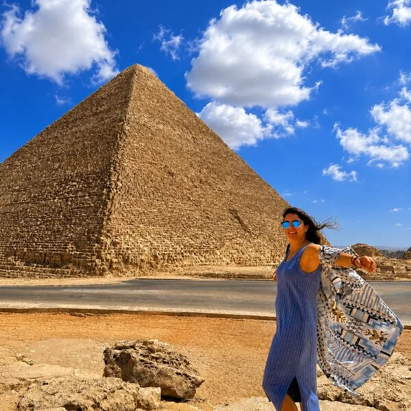
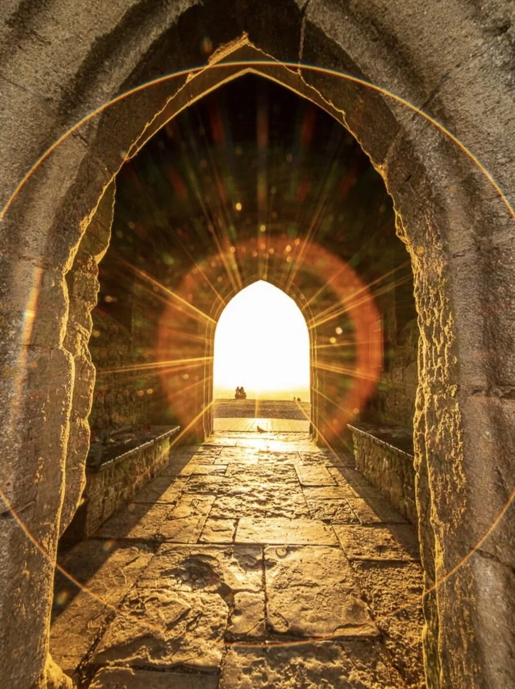

Alejandra Salama Monsalve
Salir del piloto automático y volver a ti
Pequeñas prácticas para vivir con más presencia
Cuando el ruido se apaga, siempre queda algo esencial esperándote.
Vuelve la Luz
Vuelve la Luz es un espacio para regresar a ti.
Un lugar donde la espiritualidad se vuelve sencilla, práctica y humana.
Aquí encontrarás meditaciones, respiración, recetas, historias de viaje y pequeños rituales para ayudarte a bajar el ruido, escuchar lo que necesitas y reconectar con esa parte de ti que quizá habías dejado atrás.
No se trata de convertirte en otra persona.
Se trata de recordar quién eres cuando dejas de exigirte, de correr y de vivir hacia fuera.
Vuelve la Luz nace de mi propio camino entre cocinas, viajes, silencios, cambios y aprendizajes. De entender que sanar no siempre significa empezar de cero, sino volver a unir las piezas con más conciencia.
Este espacio es una invitación a vivir con más presencia, más verdad y más alma en la tierra.
Vuelve la Luz acaba de nacer
Como cualquier camino, crecerá paso a paso.
Hoy encontrarás unos pocos recursos.
Mañana habrá muchos más.
Me hace ilusión que empieces este viaje desde el principio.
Un pequeño espacio para escucharte
Si hoy necesitas empezar por una pregunta o un gesto sencillo, estas guías pueden acompañarte.